<div class="top_page" fxLayout="column" fxLayoutAlign="start center">
    <div fxShow="false" class="top_img"  [@fadeinAnimation]="{value:'hoge',params:{time:'2000ms 300ms'}}" fxLayoutAlign="center start">
        
        
    </div>
    <div class="brand_detail_text" [@fadeinAnimation]="{value:'hoge',params:{time:'2000ms 500ms'}}">
        <div class="text_h1">
            上質な仕立てと確かなクオリティに裏打ちされた、最高級ソックス
        </div>
        
        <div class="text_blocks" 
            fxLayout="column" 
            fxLayoutAlign="start end"
            fxLayout.xs.mobile="row wrap" 
            fxLayoutAlign.xs.mobile="end end" >
            <div class="text_block">
                1912年イタリアのミラノでSozzi兄弟が創業したソックス専門ファクトリー。世界最高品質と称されるコットン糸のフィーロスコッツィアを使い、ハンドメイドでソックス作りをスタートさせました。
            </div>
            <div class="text_block">
                その頃のソックスはただの雑貨に過ぎませんでしたが、時代が流れるにつれ、紳士のワードローブの中でもエレガントなディテールを取り入れられるアイテムとしてSozziは発展。</div>
            <div class="text_block">
                2018年よりDrumohrの親会社Cioccaの傘下に入った今もなお、Sozzi兄弟のフィロソフィーは受け継がれています。</div>
        </div>
    </div>
    <div fxShow="false" class="img_foot" fxLayout="row" fxLayout.xs.mobile="column" fxLayoutAlign="center start" [ngSwitch]="(isMobileSize$|async)" [@fadeinAnimation]="{value:'hoge',params:{time:'2000ms 1200ms'}}">
        
        
    </div>
</div>
    
